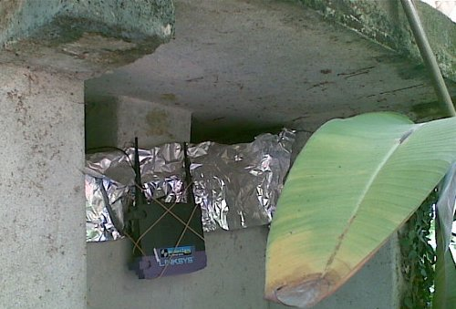

wireless
FoneraLiberta
Depois de alguns meses com um Wifi Gambiarrado do lado de fora da casa, o velho wrt54g que repetia a rede pro meu canto (e já estava em sua segunda vida) começou a abrir o bico. Aproveitei uma promoção do Submarino e comprei um roteador D-link DI-524 por 89 reais. O plano inicial era usá-lo como repetidor, mas esse modelo não deixa instalar o DD-WRT sem traumas.leia mais
- 2244 leituras
Wifi Outdoor Gambiarrado
Pra chegar a internet aqui, eu uso um roteador linksys wrt54g com o dd-wrt instalado, e rodando modo WDS (na verdade, ele tá rodando em modo repeater bridge - para WDS, o outro roteador precisaria ser compatível, o que não é meu caso). Mas ele estava com o sinal bastante limitado porque ficava debaixo de uma caixa de concreto. Resolvi gambiarrar uma caixa pra poder deixá-lo em cima da caixa.
leia mais
- 4644 leituras
Oraculismo
Totem tecnomágico
As redes wi-fi estão cada vez mais presentes em todas as partes. Usando laptops, computadores de mão e celulares com conectividade wi-fi, as pessoas estão o tempo todo conectadas com suas redes de contatos, seus arquivos, sua vida online, independente de onde estiverem. Se isso tem um lado positivo - o acesso direto a tudo que podem precisar em qualquer parte - também acaba muitas vezes por alienar as pessoas do contexto local.leia mais
- 1819 leituras
ZASF
Pesquisa sobre o desenvolvimento de Zonas Autônomas Sem Fio, usando hardware recondicionado ou de baixo custo e software livre para redes wi-fi.
(esse projeto chamava-se Oraculismo)
- 6796 leituras
Comentários recentes
1 ano 31 semanas atrás
2 anos 6 dias atrás
2 anos 2 semanas atrás
2 anos 16 semanas atrás
2 anos 16 semanas atrás
2 anos 18 semanas atrás
2 anos 19 semanas atrás
2 anos 19 semanas atrás
2 anos 19 semanas atrás
2 anos 19 semanas atrás